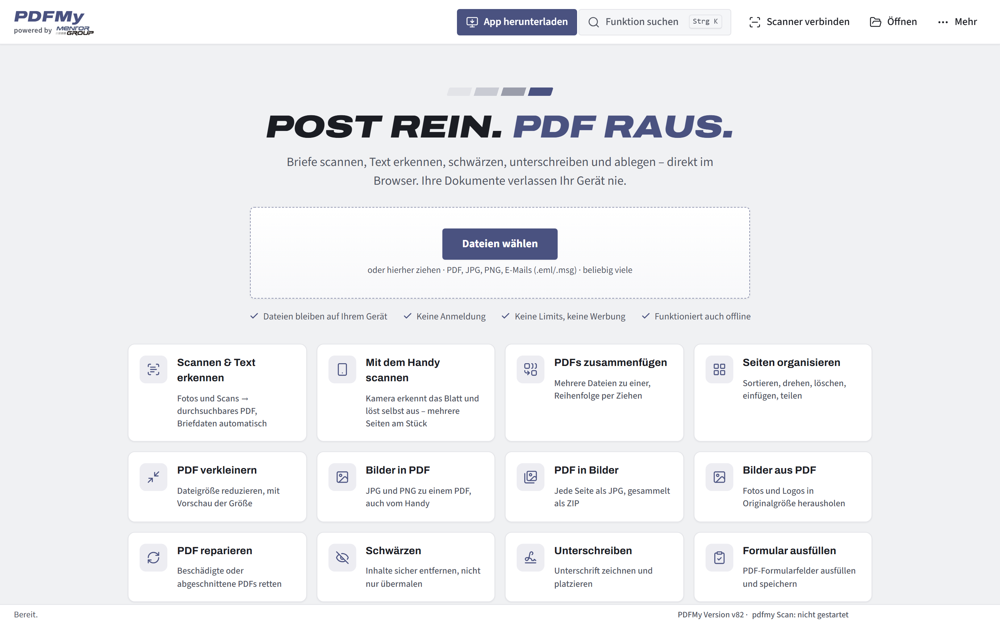
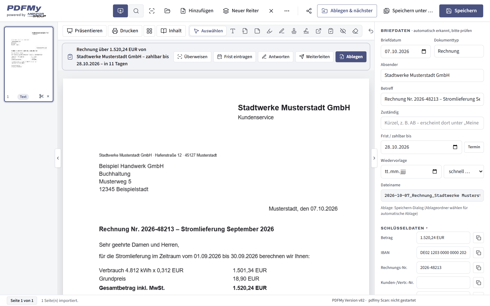

Hier finden Redaktionen Pressetexte, honorarfreies Bildmaterial und die wichtigsten Fakten zu PDFMy. Für Rückfragen, Interviews oder eine kurze Vorführung (etwa zehn Minuten, auch per Video) sind wir gern für Sie da.
PDFMy ist ein kostenloses PDF-Programm aus Paderborn, das vollständig im Browser läuft: Dokumente werden auf dem eigenen Gerät verarbeitet und nie hochgeladen. Es scannt und erkennt Briefe, nennt Betrag und Frist, hilft beim Unterschreiben, Schwärzen und Archivieren und liest und erstellt E-Rechnungen. Entwickelt wird PDFMy von der Mentor GmbH, die mit ihrem Geschäftsbereich Haus iT seit vielen Jahren kleine und mittlere Betriebe in Ostwestfalen-Lippe betreut.
Allgemein und Wirtschaft – Datenschutz durch Technik, Fälschungsschutz, Mittelstand aus OWL.
Word-Datei herunterladenIT-Fachpresse – Architektur ohne Server, OCR per WebAssembly, veraPDF und KoSIT, Scanner-Protokolle.
Word-Datei herunterladenMittelstand, Handwerk, Steuern – E-Rechnungspflicht, Belege, Nachvollziehbarkeit.
Word-Datei herunterladenVerbraucher, Ratgeber, Vereine – Briefe und Fristen verstehen, Sicherheit, Barrierefreiheit.
Word-Datei herunterladenFür Gründungsberatungen und Gründermappen – Behördenpost, Formulare, E-Rechnung, Belege.
Word-Datei herunterladenHonorarfrei zur Berichterstattung über PDFMy bei Nennung „Foto: PDFMy“. Die Briefe auf den Bildern sind Beispiele mit erfundenen Daten. Ein Porträtfoto von Wolfgang-Udo Mertens senden wir Ihnen gern zu.


Die Mentor GmbH aus Paderborn (Handelsregister HRB 9975, Amtsgericht Paderborn) ist mit ihrem Geschäftsbereich Haus iT seit vielen Jahren für kleine und mittlere Unternehmen in IT und Telekommunikation tätig. Geschäftsführer ist Wolfgang-Udo Mertens. PDFMy ist eine Eigenentwicklung des Unternehmens; sie wird nach den Grundsätzen von ISO 27001 und ISO 9001 entwickelt.